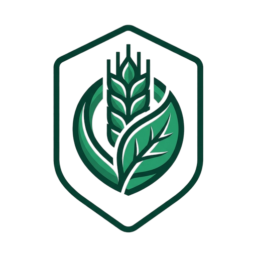

Gestion parcellaire

Ajoute, renomme ou supprime une culture. Une culture encore utilisée par une implantation ne peut pas être supprimée — renomme-la plutôt.
Ces activités proposeront ce matériel en tête de liste. Rien n'est jamais filtré : tout le parc reste sélectionnable.
Le niveau se calcule depuis les mouvements : il ne se saisit pas ici.
Le nombre de bottes se calcule depuis les mouvements. Le poids moyen d'une botte est la moyenne des poids réellement saisis à chaque entrée.
Le poids d'une botte change à chaque récolte : il est à ressaisir, sans valeur par défaut.
Conservée comme pièce justificative en cas de contrôle.
🟣 Colza semé en été/automne : proposé en Dérobée / Couvert plutôt qu'en Céréale/Oléagineux grain (pas de récolte grain l'an prochain).
Bilans construits à partir de l'assolement prévisionnel et des fiches parcelles.